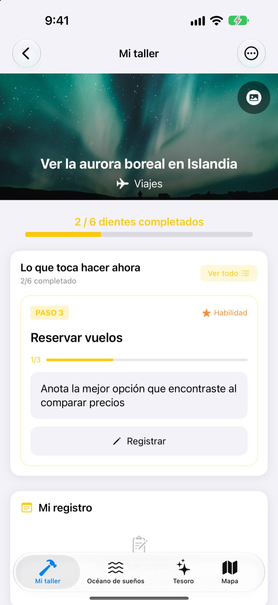
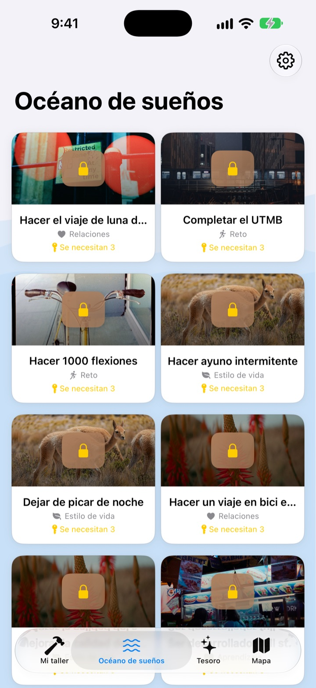
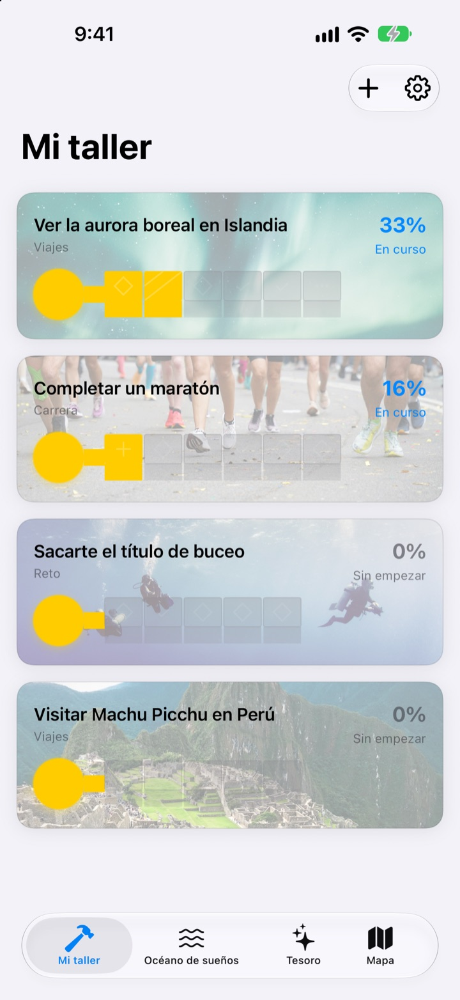
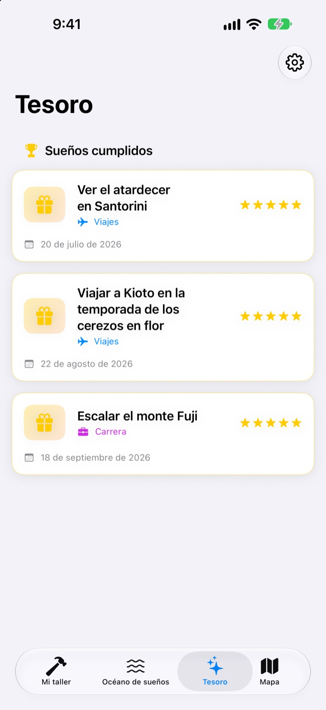

No te limites a
apuntar tus sueños
Elige un sueño y los pequeños pasos que te llevan hasta él se convierten en los dientes de una llave. Responde al paso de hoy, pregunta a pregunta, y cuando te des cuenta el cofre estará abierto.
Compras una vez y tienes todas las funciones. Sin suscripción ni anuncios.

Completa la llave
Al sueño de la aurora boreal le quedan dos pasos. Responde cada pregunta en una línea (o déjala en blanco) y toca «Siguiente». Cada paso terminado llena un diente, y con la llave completa se abre el cofre.
¿Alguna vez escribiste una lista de sueños y la olvidaste?
«Ver la aurora boreal» es tan grande que no sabes por dónde empezar, y se queda en la lista durante años. Dream Seeker lo divide en pasos que puedes hacer hoy, como mirar la temporada, ahorrar y reservar los vuelos, y solo te muestra el que toca ahora.
Más de 590 sueños para elegir
Viajes, experiencias, logros, salud, aprendizaje y relaciones. Sueños de seis áreas flotan en cofres por el Océano de sueños. Lleva uno a tu taller y sus pasos ya están preparados.
¿No ves el tuyo? Créalo con un título, un área y los pasos que hacen falta.

Un diente cada vez, lo justo para hoy
Mi taller muestra cuánto ha avanzado la llave de cada sueño. El paso que toca está arriba, y al responder sus preguntas se llena un diente.
Tus respuestas y fotos se guardan en Mi registro, y la Cronología de progreso te deja revisar todo el camino.

Los sueños cumplidos al Tesoro, los lugares al mapa
Llena todos los dientes y abre el cofre. Los sueños cumplidos se guardan en el Tesoro con su fecha, y los sueños en pausa esperan ahí hasta que quieras retomarlos.
Los sueños con un lugar aparecen en el mapa, para ver de un vistazo todos los sitios a los que quieres ir.

Empieza en tres pasos
- 1
Elige un sueño
Toca un cofre en el Océano de sueños y elige «Llevar a mi taller».
- 2
Responde el paso de hoy
Responde una a una las preguntas del paso de arriba para llenar un diente.
- 3
Abre el cofre
Cuando todos los dientes están llenos, la llave está lista y el cofre se abre.
Seis áreas en el Océano de sueños
- Viajes
- Ver la aurora boreal en Islandia · Ver el atardecer en Santorini
- Experiencia
- Hacer paracaidismo · Volar en parapente
- Logro
- Completar un maratón · Hacer el trekking al campo base del Everest
- Salud
- Hacer 20 dominadas · Marcar abdominales
- Aprendizaje
- Hablar inglés con fluidez · Hablar francés con fluidez
- Relaciones
- Dar la vuelta al mundo con mis padres · Vivir un mes en la isla de Jeju con amigos
Cada área tiene casi cien sueños. Crea los tuyos con «Añadir nuevo sueño» en Mi taller.
Una compra y lo tienes todo
La app
- Más de 590 sueños con preguntas en cada paso
- Tus propios sueños
- Mi registro con fotos y la Cronología de progreso
- Tesoro y mapa
- Modo Escalada
- Las próximas actualizaciones
Apoyar al desarrollador (opcional)
- Si la app te ayuda, puedes dejar una pequeña propina desde Ajustes
- Las propinas no desbloquean nada. Sin ellas, todas las funciones siguen siendo tuyas
Propinas sueltas, no una suscripción.
Dentro de la app no hay nada de pago. Sin cuenta ni anuncios.
Preguntas frecuentes
¿Cómo empiezo?
En la pestaña Océano de sueños, toca un cofre que te guste y elige «Llevar a mi taller». En Mi taller, responde las preguntas del paso actual y los dientes se irán llenando. Cuando estén todos, podrás abrir el cofre.
¿Puedo añadir mi propio sueño?
Sí. En Mi taller, toca «Añadir nuevo sueño» y escribe un título, un área y los pasos para lograrlo.
¿Cómo pongo un sueño en pausa o lo retomo?
En el menú de un sueño en curso, elige «Renunciar a este sueño» y pasará a Sueño en pausa, en el Tesoro. Ahí puedes tocar «Retomar» para devolverlo a Mi taller, o «Eliminar para siempre» para borrarlo.
¿Qué es el Modo Escalada?
Una pantalla que gestiona tus sueños como si escalaras una montaña. Actívalo o desactívalo en Ajustes > Ajustes de pantalla. Te permite seguir plazos por paso y obstáculos como el dinero o el tiempo, como en un proyecto.
No se ven las fotos.
Algunas imágenes de fondo se descargan de internet. Comprueba que tienes conexión. Sin conexión se muestra una imagen predeterminada.
¿Puedo pasar mi registro a un iPhone nuevo?
Tu registro solo se guarda en este dispositivo, sin cuenta ni sincronización. Si restauras un iPhone nuevo desde una copia de iCloud o del ordenador, se pasa junto con los datos de tus otras apps.
¿Hay compras dentro de la app?
No. Con la app tienes todas las funciones. Las propinas de Ajustes solo están por si quieres dar las gracias.
¿Se envían mis sueños y mi registro a algún sitio?
No. No hay cuenta, ni anuncios, ni herramientas de análisis. Tus sueños, tu registro y tus fotos se quedan en tu dispositivo.
¿Cómo contacto con vosotros?
Errores, ideas o lo que sea: envíalo desde «Enviar comentarios» en los Ajustes de la app, o por mensaje directo de Instagram (@lee25_ios).
¿Dudas o problemas? Escribe a leeo@kakao.com.